library(tidyverse)
library(modelsummary) # modelsummary creates regression and summary tables
library(marginaleffects) # marginaleffects creates prediction and effect plots
library(broom) # broom turns model output into tidy data frames
library(patchwork) # patchwork combines multiple ggplot figures11 Visualizing Models
Coefficient plots, predictions, marginal effects, and interactions
Regression tables are useful, but they are not always the best way to understand a model. A coefficient plot can make uncertainty easier to see. A prediction plot can translate model estimates into the scale of the outcome. For logit models, prediction plots are especially helpful because log-odds are hard to interpret directly.
This chapter uses Chicago Airbnb listings from 2016 as its running example. The data covers 1,561 listings with information on price, room type, guest capacity, and a handful of other listing attributes.
11.1 A first model: predicting price directly
The natural starting point is to model price in dollars. We will use guest capacity and room type as predictors.
airbnb_raw <- read_csv("Data/airbnb/airbnb.csv", show_col_types = FALSE)
airbnb <- airbnb_raw |>
mutate(
log_price = log(price),
log_reviews = log(reviews),
room_type = factor(
room_type,
levels = c("Entire home/apt", "Private room", "Shared room")
),
expensive = price >= 150
)
glimpse(airbnb)Rows: 1,561
Columns: 16
$ rownames <dbl> 1, 2, 3, 4, 5, 6, 7, 8, 9, 10, 11, 12, 13, 14, 15, 16, 1…
$ price <dbl> 85, 35, 175, 75, 160, 60, 39, 65, 47, 100, 150, 38, 87, …
$ rating <dbl> 5.0, 5.0, 4.5, 5.0, 5.0, 5.0, 5.0, 5.0, 4.5, 4.5, 4.5, 5…
$ reviews <dbl> 6, 8, 7, 52, 3, 5, 8, 25, 7, 24, 8, 3, 10, 15, 3, 6, 5, …
$ room_type <fct> Private room, Private room, Entire home/apt, Private roo…
$ accommodates <dbl> 2, 1, 4, 2, 6, 1, 2, 2, 2, 6, 6, 1, 4, 3, 4, 6, 2, 4, 4,…
$ bedrooms <dbl> 1, 1, 2, 1, 2, 1, 1, 1, 1, 2, 2, 1, 1, 1, 2, 3, 1, 0, 1,…
$ minimum_stay <dbl> 1, 1, 2, 1, 1, 1, 3, 2, 1, NA, 5, 10, 2, 1, 2, 2, 1, NA,…
$ neighborhood <chr> "Albany Park", "Albany Park", "Albany Park", "Albany Par…
$ district <chr> "Far North", "Far North", "Far North", "Far North", "Far…
$ walk_score <dbl> 87, 87, 87, 87, 87, 87, 87, 87, 87, 87, 87, 87, 87, 87, …
$ transit_score <dbl> 62, 62, 62, 62, 62, 62, 62, 62, 62, 62, 62, 62, 62, 62, …
$ bike_score <dbl> 68, 68, 68, 68, 68, 68, 68, 68, 68, 68, 68, 68, 68, 68, …
$ log_price <dbl> 4.442651, 3.555348, 5.164786, 4.317488, 5.075174, 4.0943…
$ log_reviews <dbl> 1.791759, 2.079442, 1.945910, 3.951244, 1.098612, 1.6094…
$ expensive <lgl> FALSE, FALSE, TRUE, FALSE, TRUE, FALSE, FALSE, FALSE, FA…Entire home/apt is the reference category for room type.
airbnb |> count(room_type)Shared rooms are rare (about 50 listings). This will matter later when fitting an interaction model.
The function lm() is part of base R. It fits ordinary least squares regression models.
price_raw <- lm(price ~ accommodates + room_type, data = airbnb)
summary(price_raw)
Call:
lm(formula = price ~ accommodates + room_type, data = airbnb)
Residuals:
Min 1Q Median 3Q Max
-246.83 -29.43 -5.04 20.04 640.27
Coefficients:
Estimate Std. Error t value Pr(>|t|)
(Intercept) 64.1480 4.7551 13.490 <2e-16 ***
accommodates 18.4739 0.8705 21.221 <2e-16 ***
room_typePrivate room -41.1361 4.1146 -9.998 <2e-16 ***
room_typeShared room -85.6087 9.8368 -8.703 <2e-16 ***
---
Signif. codes: 0 '***' 0.001 '**' 0.01 '*' 0.05 '.' 0.1 ' ' 1
Residual standard error: 66.75 on 1557 degrees of freedom
Multiple R-squared: 0.4305, Adjusted R-squared: 0.4294
F-statistic: 392.3 on 3 and 1557 DF, p-value: < 2.2e-16The coefficients are easy to read: each additional guest the listing accommodates is associated with about $18 more per night, and private rooms cost about $41 less than entire homes after holding capacity constant.
But the model itself has problems. We can see them by looking at the fitted values and residuals.
price_raw_aug <- augment(price_raw)
ggplot(price_raw_aug, aes(x = .fitted, y = .resid)) +
geom_hline(yintercept = 0, linetype = "dashed", color = "red") +
geom_point(alpha = 0.25) +
labs(
title = "Residuals from the Raw-Price Model",
x = "Fitted price",
y = "Residuals"
) +
theme_bw()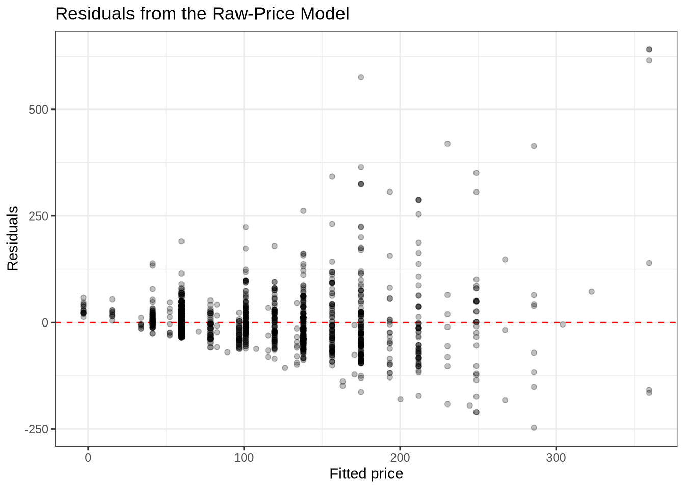
The residual cloud fans out. At low fitted prices the spread is tight; at high fitted prices the spread is huge. That is heteroskedasticity, and it means standard errors and prediction intervals from this model are not trustworthy.
There is a second problem. Price cannot be negative, but a linear model on dollars can produce negative predictions for small, cheap listings.
sum(predict(price_raw) < 0)[1] 17range(predict(price_raw))[1] -2.986744 359.730343Seventeen listings have negative predicted prices. The model can produce nonsense values because nothing in OLS knows that price has a floor.
Both problems share a root cause: prices are right-skewed. We can see that directly by plotting the price distribution.
airbnb |>
select(Price = price, `Log price` = log_price) |>
pivot_longer(everything(), names_to = "scale", values_to = "value") |>
mutate(scale = factor(scale, levels = c("Price", "Log price"))) |>
ggplot(aes(x = value, fill = scale)) +
geom_density(alpha = 0.4) +
facet_wrap(~ scale, scales = "free_x") +
scale_fill_manual(values = c("Price" = "#355c7d", "Log price" = "#c44d58")) +
labs(x = NULL, y = "Density") +
theme_bw() +
theme(legend.position = "none")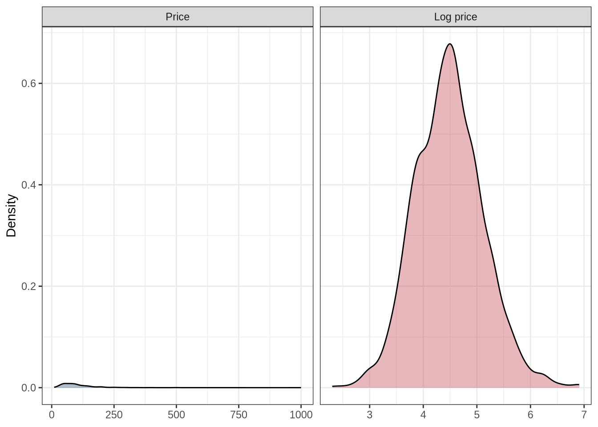
Raw price has a long right tail running into the high hundreds. Log price is close to symmetric and roughly bell-shaped. A linear model assumes that the variation around the conditional mean is roughly even in spread and not strongly skewed; the log-price distribution lines up with that assumption much better than the raw-price one.
The fix, then, is to model log price instead. On the log scale, an additional guest adds a proportional amount to the price rather than a flat dollar amount. Coefficients on a log outcome read as approximate percent changes, which is the natural unit for price.
11.2 OLS on log price
price_model <- lm(log_price ~ accommodates + room_type, data = airbnb)A regular model summary gives the numerical details.
summary(price_model)
Call:
lm(formula = log_price ~ accommodates + room_type, data = airbnb)
Residuals:
Min 1Q Median 3Q Max
-2.50769 -0.25335 -0.01587 0.25889 1.62747
Coefficients:
Estimate Std. Error t value Pr(>|t|)
(Intercept) 4.467905 0.030019 148.84 <2e-16 ***
accommodates 0.087449 0.005496 15.91 <2e-16 ***
room_typePrivate room -0.584210 0.025975 -22.49 <2e-16 ***
room_typeShared room -1.304344 0.062100 -21.00 <2e-16 ***
---
Signif. codes: 0 '***' 0.001 '**' 0.01 '*' 0.05 '.' 0.1 ' ' 1
Residual standard error: 0.4214 on 1557 degrees of freedom
Multiple R-squared: 0.557, Adjusted R-squared: 0.5562
F-statistic: 652.7 on 3 and 1557 DF, p-value: < 2.2e-16modelsummary() comes from the modelsummary package. It gives a cleaner table.
modelsummary(
price_model,
stars = TRUE,
coef_rename = c("accommodates" = "Guest capacity"),
gof_omit = "AIC|BIC|Log.Lik|F|RMSE"
)| (1) | |
|---|---|
| + p < 0.1, * p < 0.05, ** p < 0.01, *** p < 0.001 | |
| (Intercept) | 4.468*** |
| (0.030) | |
| Guest capacity | 0.087*** |
| (0.005) | |
| room_typePrivate room | -0.584*** |
| (0.026) | |
| room_typeShared room | -1.304*** |
| (0.062) | |
| Num.Obs. | 1561 |
| R2 | 0.557 |
| R2 Adj. | 0.556 |
The accommodates coefficient is about 0.09 on the log scale, so each additional guest the listing accommodates is associated with roughly 9% higher price. The Private room coefficient is around −0.58, meaning private rooms cost about 44% less than entire homes after holding capacity constant (exp(-0.58) ≈ 0.56). Shared rooms are about 73% cheaper. The model’s R² is around 0.56, much higher than typical for cross-sectional pricing data — these two predictors carry most of the structure.
log_aug <- augment(price_model)
ggplot(log_aug, aes(x = .fitted, y = .resid)) +
geom_hline(yintercept = 0, linetype = "dashed", color = "red") +
geom_point(alpha = 0.25) +
labs(
title = "Residuals from the Log-Price Model",
x = "Fitted log price",
y = "Residuals"
) +
theme_bw()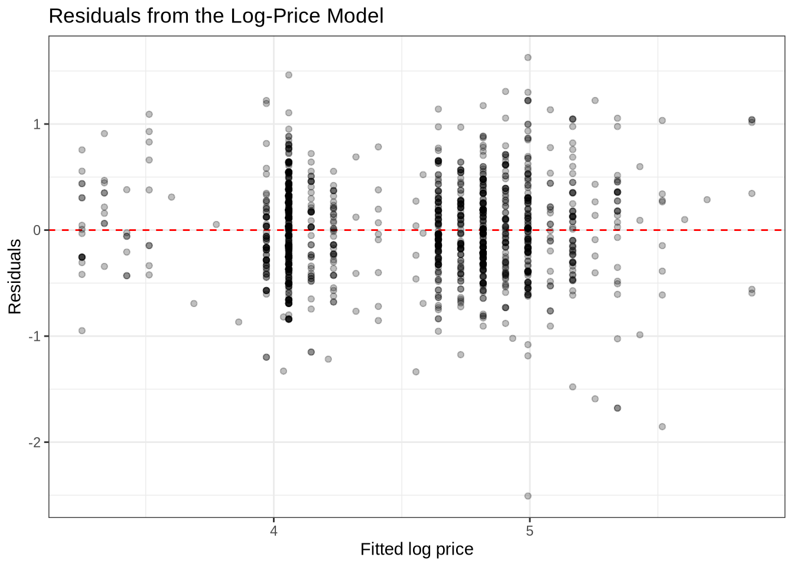
The residual cloud is roughly even in width across the fitted range. The vertical bands at the lower end correspond to Private and Shared rooms, which have fewer distinct fitted values. This is the kind of residual plot you want to see before trusting standard errors and predictions.
11.3 Coefficient plots
A coefficient plot shows each estimate as a point and the uncertainty around it as an interval.
The function modelplot() comes from the modelsummary package.
modelplot(price_model) +
labs(
title = "Coefficient Plot for Airbnb Price Model",
x = "Estimated association with log price",
y = NULL
) +
theme_bw()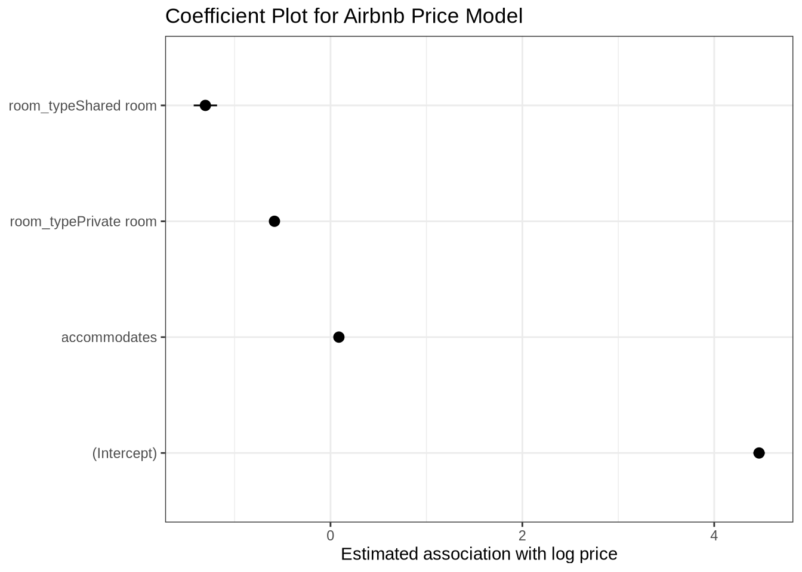
The vertical line at zero is the reference point. If an interval crosses zero, the estimate is less clearly distinguishable from no association at conventional levels. Here all three intervals are far from zero. The Private room and Shared room coefficients are large and negative, which is the expected ordering of property types.
Coefficient plots are useful when the coefficients are on a meaningful scale. They are less useful when coefficients are transformations or log-odds that readers will struggle to interpret.
11.4 A manual coefficient plot
modelplot() is convenient, but it is useful to see what it is doing conceptually. The function tidy() comes from the broom package. It turns model estimates into a data frame that can be filtered, renamed, and plotted like any other dataset.
price_coef <- tidy(price_model, conf.int = TRUE) |>
filter(term != "(Intercept)") |>
mutate(
term = recode(
term,
"accommodates" = "Guest capacity",
"room_typePrivate room" = "Private room",
"room_typeShared room" = "Shared room"
)
)
price_coefggplot(price_coef, aes(x = estimate, y = reorder(term, estimate))) +
geom_vline(xintercept = 0, color = "gray70") +
geom_errorbar(aes(xmin = conf.low, xmax = conf.high), width = 0.15) +
geom_point(size = 2.4, color = "#355c7d") +
labs(
title = "Manual Coefficient Plot",
subtitle = "Same model output, now treated as data",
x = "Estimated association with log price",
y = NULL
) +
theme_bw()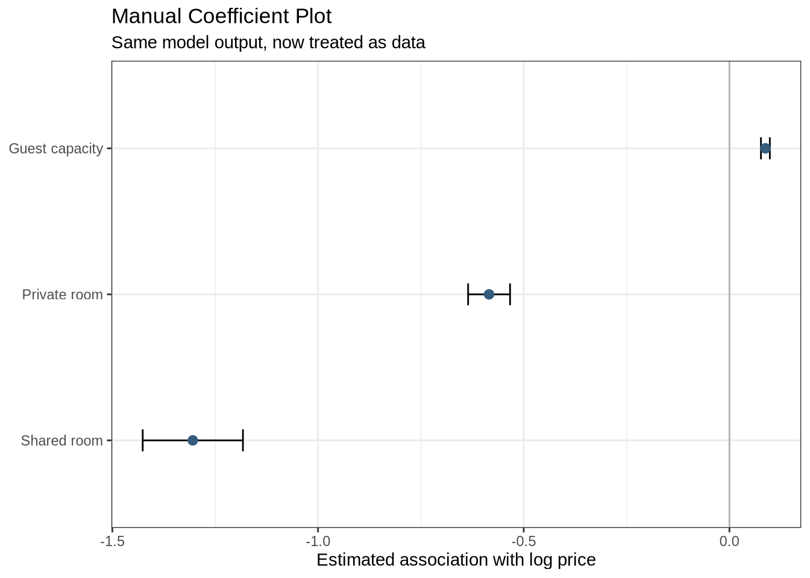
This manual version is useful when the default plot needs more control over labels, ordering, colors, or annotations.
11.5 Tidy model output with broom
The broom package turns model output into data frames. This makes model output easier to inspect, filter, and plot with ggplot2.
tidy(price_model)glance() also comes from broom. It gives a one-row model summary.
glance(price_model)augment() also comes from broom. It adds fitted values and residuals to the data.
price_augmented <- augment(price_model)
price_augmented |>
select(log_price, .fitted, .resid, room_type) |>
slice_head(n = 8)These columns are what made the diagnostic plot above possible.
11.6 Prediction plots
Prediction plots translate the model back into the outcome scale. Here we show predicted log price across guest capacity.
The function plot_predictions() comes from the marginaleffects package.
plot_predictions(price_model, condition = "accommodates") +
labs(
title = "Predicted Log Price by Guest Capacity",
x = "Guests accommodated",
y = "Predicted log price"
) +
theme_bw()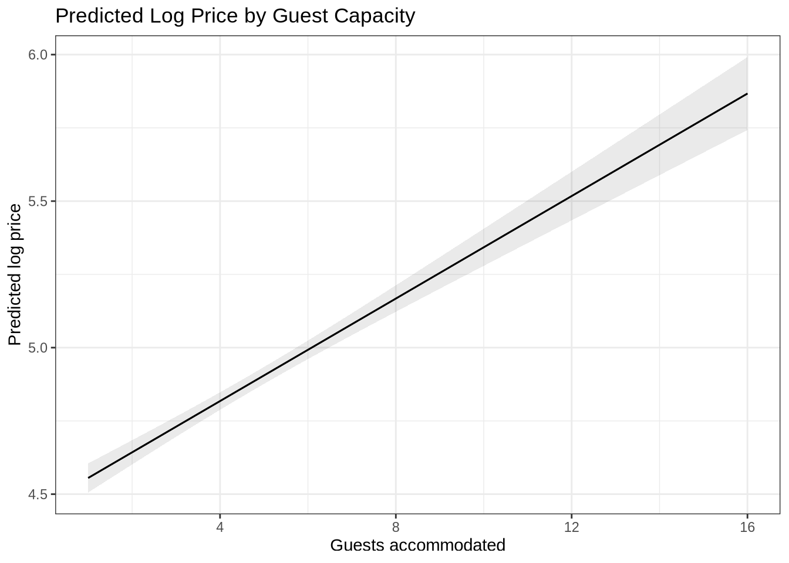
Because plot_predictions() returns a ggplot object, we can add layers.
plot_predictions(price_model, condition = "accommodates") +
geom_point(
data = airbnb,
aes(x = accommodates, y = log_price),
alpha = 0.15,
inherit.aes = FALSE
) +
labs(
title = "Predicted Log Price with Raw Data",
subtitle = "Line is the model prediction; points are listings",
x = "Guests accommodated",
y = "Log price"
) +
theme_bw()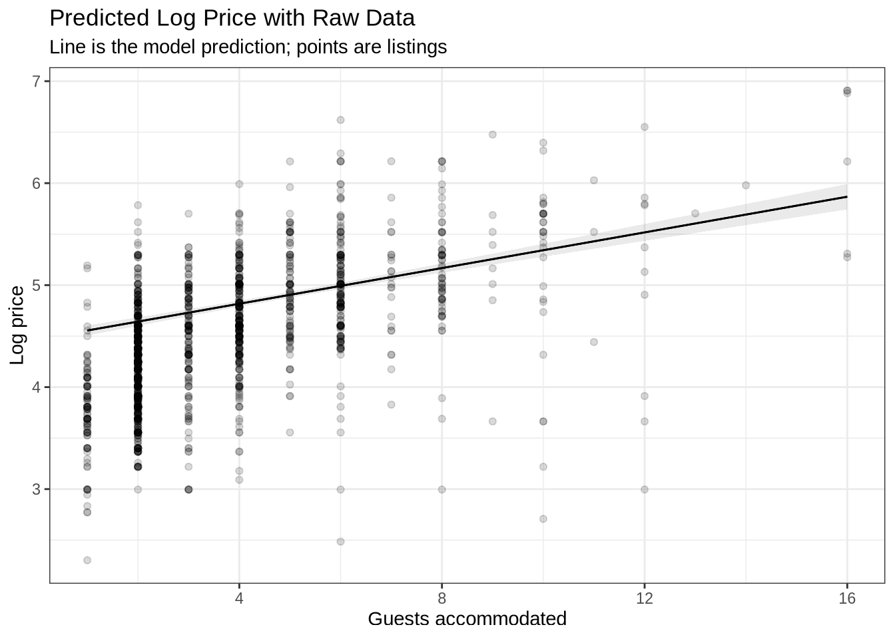
Now condition on two variables.
plot_predictions(price_model, condition = c("accommodates", "room_type")) +
labs(
title = "Predicted Log Price by Capacity and Room Type",
x = "Guests accommodated",
y = "Predicted log price",
color = "Room type"
) +
theme_bw()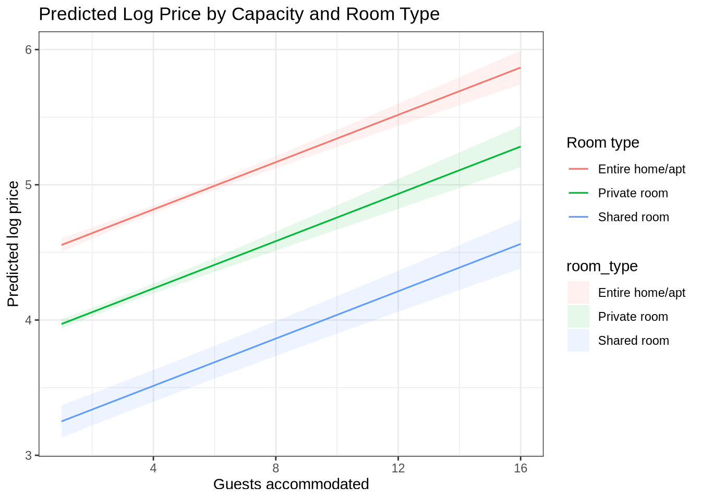
This is a conditional prediction plot. It shows model predictions over a grid of values. The three room-type lines are parallel because this is an additive model: each room type has its own intercept but shares the same capacity slope. The vertical gaps between the lines are the room-type coefficients made visible — Entire homes at the top, Private rooms below, Shared rooms lowest. The interaction model below relaxes the parallel-slopes assumption.
11.7 Comparing nested models
Model visualization is often comparative. A single model may answer a question, but two or three related models show how an estimate changes when controls are added.
The next step is to add two more predictors: the number of guest reviews the listing has accumulated (a rough pre-booking signal of popularity) and minimum_stay (the host-set policy on the shortest allowed booking).
The raw review count is heavily right-skewed — most listings have a handful of reviews, a few have hundreds. The same logic that motivated logging price applies here: on the raw scale, the model would treat the difference between 5 and 50 reviews as much smaller than the difference between 250 and 295, when substantively the first is the more meaningful change. We use log_reviews (created in the data-prep step above) for the same reason. On a logged predictor, the coefficient describes the effect of a proportional change in reviews, not a one-unit change.
price_model_simple <- lm(log_price ~ accommodates, data = airbnb)
price_model_rooms <- lm(log_price ~ accommodates + room_type, data = airbnb)
price_model_controls <- lm(
log_price ~ accommodates + room_type + log_reviews + minimum_stay,
data = airbnb
)
price_models <- list(
"Capacity only" = price_model_simple,
"+ Room type" = price_model_rooms,
"+ Controls" = price_model_controls
)
modelsummary(
price_models,
stars = TRUE,
coef_omit = "Intercept",
gof_omit = "AIC|BIC|Log.Lik|F|RMSE"
)| Capacity only | + Room type | + Controls | |
|---|---|---|---|
| + p < 0.1, * p < 0.05, ** p < 0.01, *** p < 0.001 | |||
| accommodates | 0.158*** | 0.087*** | 0.091*** |
| (0.006) | (0.005) | (0.006) | |
| room_typePrivate room | -0.584*** | -0.572*** | |
| (0.026) | (0.027) | ||
| room_typeShared room | -1.304*** | -1.273*** | |
| (0.062) | (0.064) | ||
| log_reviews | -0.021* | ||
| (0.010) | |||
| minimum_stay | 0.000 | ||
| (0.009) | |||
| Num.Obs. | 1561 | 1561 | 1423 |
| R2 | 0.335 | 0.557 | 0.558 |
| R2 Adj. | 0.335 | 0.556 | 0.556 |
modelplot(
price_models,
coef_omit = "Intercept"
) +
labs(
title = "Comparing Related Models",
subtitle = "Coefficient plots can show how estimates change across specifications",
x = "Estimated association with log price",
y = NULL
) +
theme_bw()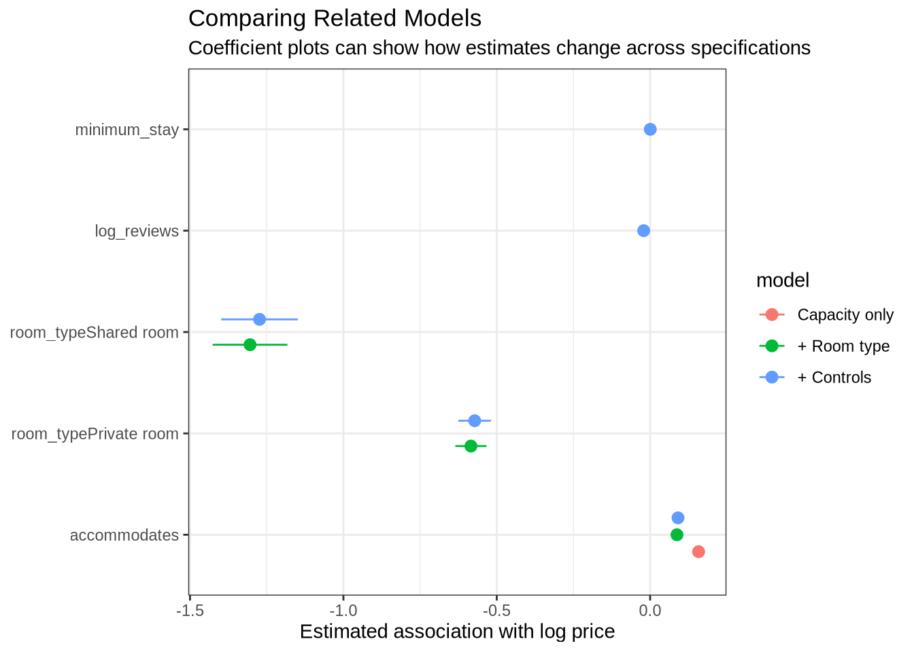
This plot is not a substitute for thinking carefully about the model. It is a compact way to inspect whether estimates are stable across reasonable specifications.
Two things stand out. First, the capacity coefficient drops sharply once room type enters the model — from about 0.16 in the capacity-only model to about 0.09 with room type included. The simple capacity effect was partly capturing the fact that larger groups stay in entire homes; once room type is in the model, the remaining capacity effect is the within-room-type effect.
Second, the controls barely move the headline estimates. The capacity and room-type coefficients are nearly identical with or without log_reviews and minimum_stay, and R² rises by less than half a percentage point. The log_reviews coefficient is about −0.021 and marginally significant: doubling the number of reviews is associated with roughly 1–2% lower price. The sign is the opposite of a clean popularity-pricing story. Several stories are consistent with this: older listings accumulate more reviews and may not have raised their prices, or popular listings book up regardless of price and so review count ends up uncorrelated with — or even slightly negative on — price in equilibrium. The minimum_stay coefficient is essentially zero and clearly non-significant.
This is a useful teaching outcome on its own: not every plausible predictor moves the headline estimates, and a good comparative table is what makes that visible.
11.8 Interactions
An interaction allows a relationship to differ across groups. In this model, the association between capacity and price can vary by room type.
Shared rooms have only about 50 listings in the data, and within that group the price range is very narrow. That is too little information for a room-type-specific capacity slope, so this example drops Shared rooms before fitting the interaction model. This keeps the example focused on interaction interpretation rather than on an extreme uncertainty band from a tiny group.
airbnb_interaction <- airbnb |>
filter(room_type != "Shared room") |>
mutate(room_type = droplevels(room_type))
price_interaction <- lm(
log_price ~ accommodates * room_type + log_reviews + minimum_stay,
data = airbnb_interaction
)
modelsummary(
list(
"Additive model" = price_model_controls,
"Interaction model" = price_interaction
),
stars = TRUE,
coef_omit = "Intercept",
gof_omit = "AIC|BIC|Log.Lik|F|RMSE"
)| Additive model | Interaction model | |
|---|---|---|
| + p < 0.1, * p < 0.05, ** p < 0.01, *** p < 0.001 | ||
| accommodates | 0.091*** | 0.102*** |
| (0.006) | (0.006) | |
| room_typePrivate room | -0.572*** | -0.455*** |
| (0.027) | (0.051) | |
| room_typeShared room | -1.273*** | |
| (0.064) | ||
| log_reviews | -0.021* | -0.016 |
| (0.010) | (0.010) | |
| minimum_stay | 0.000 | 0.001 |
| (0.009) | (0.009) | |
| accommodates × room_typePrivate room | -0.041* | |
| (0.017) | ||
| Num.Obs. | 1423 | 1376 |
| R2 | 0.558 | 0.533 |
| R2 Adj. | 0.556 | 0.531 |
The table is detailed, but the interaction is easier to understand with predictions.
plot_predictions(price_interaction, condition = c("accommodates", "room_type")) +
labs(
title = "Interaction Model: Capacity and Room Type",
x = "Guests accommodated",
y = "Predicted log price",
color = "Room type"
) +
theme_bw()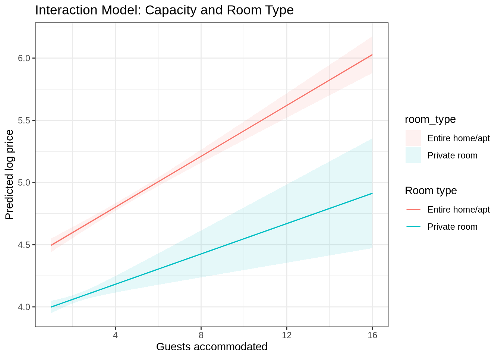
When presenting an interaction, a prediction plot is usually clearer than a table of interaction coefficients.
The interaction plot tells us that the capacity-price relationship is steeper for entire homes than for private rooms. Each additional guest adds roughly 10% to the price of an entire home but only about 6% to a private room (the main capacity coefficient is about 0.10, and the interaction term is about −0.04, so the private-room slope is roughly 0.06). The interaction coefficient is significant at conventional levels. The substantive direction is sensible: the marginal value of accommodating one more person is larger when the whole property is yours.
11.9 Logit: binary outcomes
A logistic regression model is used when the outcome is binary. We will define a binary outcome: whether a listing is expensive (price of $150 or more per night, the top quartile in this data).
The function glm() is part of base R. With family = binomial, it fits a logistic regression model.
price_logit <- glm(
expensive ~ accommodates + room_type + log_reviews + minimum_stay,
data = airbnb_interaction,
family = binomial
)The model estimates log-odds. Log-odds are not intuitive for most readers.
modelsummary(
price_logit,
stars = TRUE,
coef_omit = "Intercept",
gof_omit = "AIC|BIC|Log.Lik|RMSE"
)| (1) | |
|---|---|
| + p < 0.1, * p < 0.05, ** p < 0.01, *** p < 0.001 | |
| accommodates | 0.390*** |
| (0.042) | |
| room_typePrivate room | -2.842*** |
| (0.378) | |
| log_reviews | -0.247** |
| (0.081) | |
| minimum_stay | 0.073 |
| (0.060) | |
| Num.Obs. | 1376 |
| F | 46.531 |
A coefficient plot is still possible, but the x-axis is in log-odds.
modelplot(price_logit) +
labs(
title = "Coefficient Plot for a Logit Model",
x = "Estimated association in log-odds",
y = NULL
) +
theme_bw()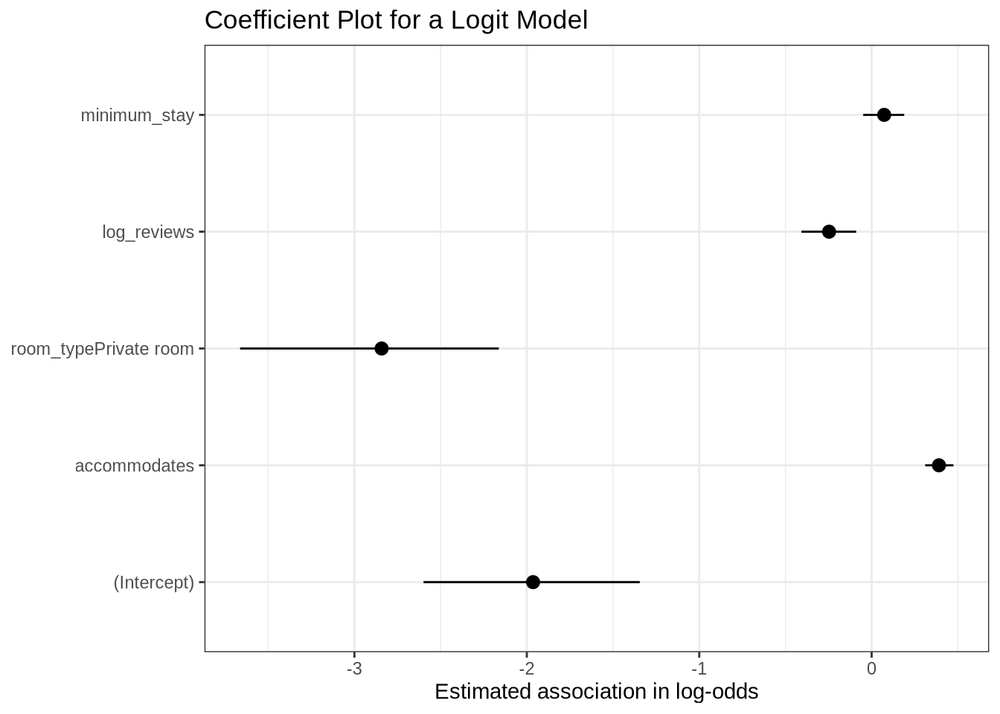
For interpretation, predicted probabilities are better.
plot_predictions(price_logit, condition = c("accommodates", "room_type")) +
scale_y_continuous(labels = scales::percent_format()) +
labs(
title = "Predicted Probability of an Expensive Listing",
subtitle = "Expensive defined as price ≥ $150",
x = "Guests accommodated",
y = "Predicted probability",
color = "Room type"
) +
theme_bw()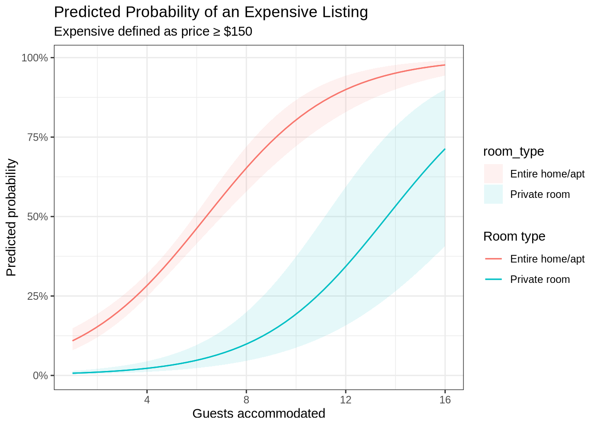
This plot returns the model to a scale people understand: probability. The story is stark. An entire home that accommodates eight guests has roughly a 90% predicted probability of being expensive. A private room at the same capacity has well under 10%. The two curves separate quickly even at low capacity. The natural reading is that room type matters far more than capacity for whether a listing ends up in the top quartile.
11.10 Marginal and adjusted predictions
There are two related ideas that often appear in model visualization:
- Conditional predictions hold variables at selected values and show predictions across a grid.
- Marginal or adjusted predictions compute predictions for observed cases and average across a group.
The by argument gives averaged predictions by group.
plot_predictions(price_logit, by = "room_type") +
scale_y_continuous(labels = scales::percent_format()) +
labs(
title = "Average Predicted Probability of an Expensive Listing by Room Type",
x = "Room type",
y = "Average predicted probability"
) +
theme_bw()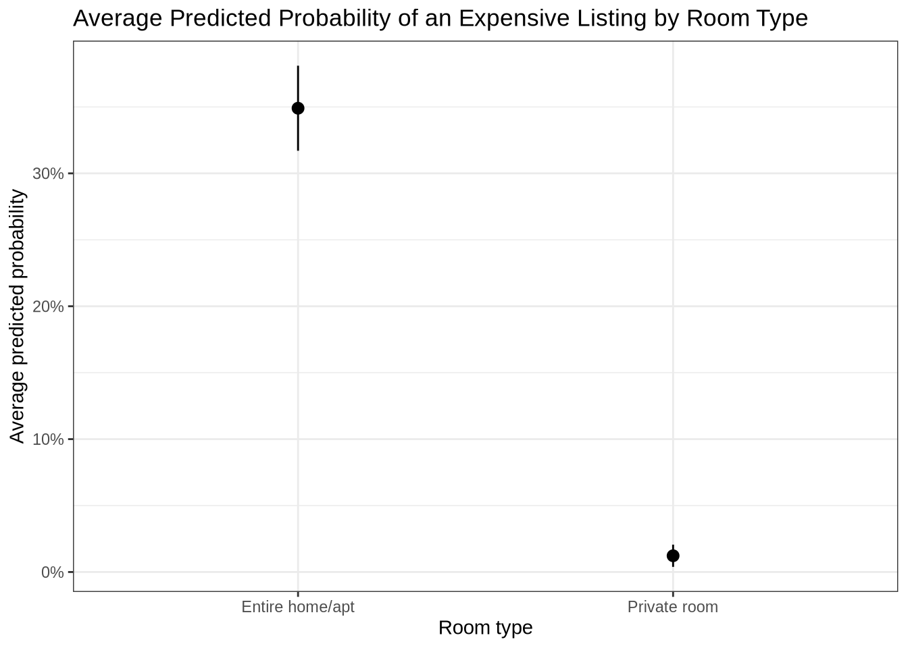
Use conditional predictions when you want to show a relationship across values. Use averaged predictions when you want a compact group comparison.
The averaged predictions make the gap concrete: about 36% of entire homes are predicted to be expensive, versus roughly 1% of private rooms. This is averaged across the observed distribution of capacity in each group, so it reflects the kinds of listings that actually exist rather than predictions at arbitrary capacity values.
11.11 Slopes and marginal effects
Prediction plots show predicted outcomes. Sometimes the quantity of interest is the slope: how much the predicted outcome changes when a predictor changes.
For the interaction model, the capacity slope is allowed to differ by room type. plot_slopes() visualizes those room-type-specific slopes directly.
plot_slopes() comes from the marginaleffects package.
plot_slopes(
price_interaction,
variables = "accommodates",
condition = "room_type"
) +
labs(
title = "Estimated Capacity Slope by Room Type",
x = "Room type",
y = "Estimated slope for guest capacity"
) +
theme_bw()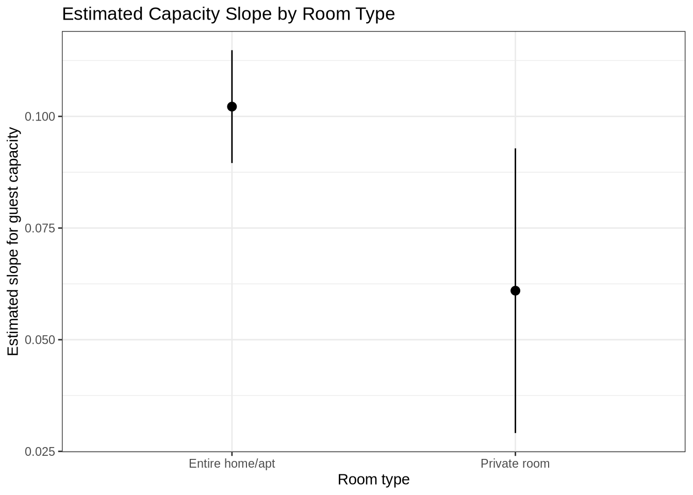
The slopes plot makes the interaction story numerical: the estimated capacity slope is about 0.10 for entire homes and about 0.06 for private rooms. The two intervals are close but the entire-home slope is clearly higher. The same finding could be read out of the interaction-model table, but the plot makes the size, direction, and uncertainty visible in one frame.
This is a model-based comparison. It should be read as an estimate from the fitted model, not as a raw descriptive difference.
11.12 Comparing plots
The patchwork package can place related model plots side by side.
p_coef <- modelplot(price_model) +
labs(title = "Coefficients", x = "Estimate", y = NULL) +
theme_bw()
p_pred <- plot_predictions(price_model, condition = c("accommodates", "room_type")) +
labs(title = "Predictions", x = "Guests accommodated", y = "Log price") +
theme_bw()
p_coef + p_pred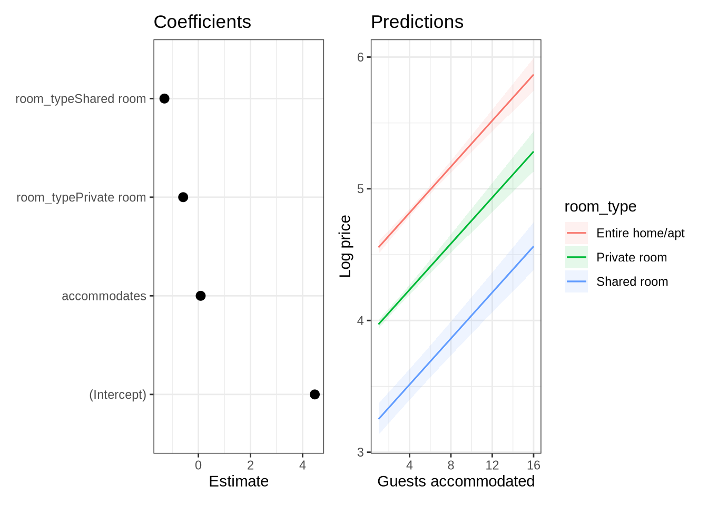
The coefficient plot emphasizes estimates and uncertainty. The prediction plot emphasizes substantive interpretation.